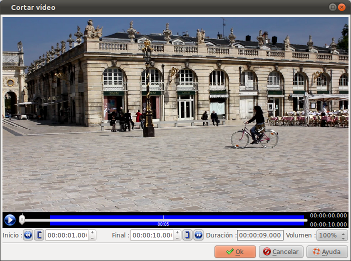
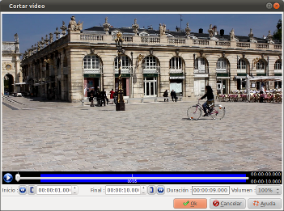

Introducción
La ventana cortar un video
permite definir el inicio y el final de la secuencia de video.


esta ventana se abre desde Modificando
las diapositivas, haciendo click en el botón
or when you double-click on a
video block.
Decripción del contenido de la ventana
La barra de progreso
Muestra lo siguiente:- La longitud de la guía se incrementa en proporción a la duración del video.
- La parte azul representa la parte del video que se ha seleccionado (que se utilizará en el montaje).
- El botón
 inicia la
reproducción. que se transforma en
inicia la
reproducción. que se transforma en  .
Hacer click de nuevo en este botón para hacer una
pausa.
.
Hacer click de nuevo en este botón para hacer una
pausa.
Zona de trabajo
 Colocar el cursor en el
punto de partida
Colocar el cursor en el
punto de partida  Utiliza la posición
actual del cursor como una posición de partida
(completando la zona de edición)
Utiliza la posición
actual del cursor como una posición de partida
(completando la zona de edición)  Coloca el cursor en el punto final
Coloca el cursor en el punto final  Colocar el cursor en la
posición final (completando la zona de edición)
Colocar el cursor en la
posición final (completando la zona de edición)
Consulta también
© ffDiaporama 1.1